ECON 2041
Introductory Econometrics
Untangling relationships
Plan for the semester
1 What is econometrics?
2 Basic mathematical tools
3 Stats fundamentals
4 Stats fundamentals II
5 Simple regression
6 OLS properties & fit
7 Flavors of OLS & OVB Quiz
8 Causality
9 Regression inference
10 Inference, continued PS due 16 Oct
11 Diagnostics
12 Measurement error & IRL
13 Revision
Plan for today
- Finish the line: how we pick & interpret the intercept
- Name the parts of a regression
- Dataset vote: last call
- How lucky is the Lucky Country?
- Your intuition vs. the data
- More than one X: multivariate regression
The intercept anchors the line at the means
\bar{y} = \hat{\beta}_0+\hat{\beta}_1\bar{x}
\hat{\beta}_0 = \bar{y}-\hat{\beta}_1\bar{x}
\begin{aligned} &=496.2-45.07(0.343)\\ &=\color{#c8102e}{480.7} \end{aligned}
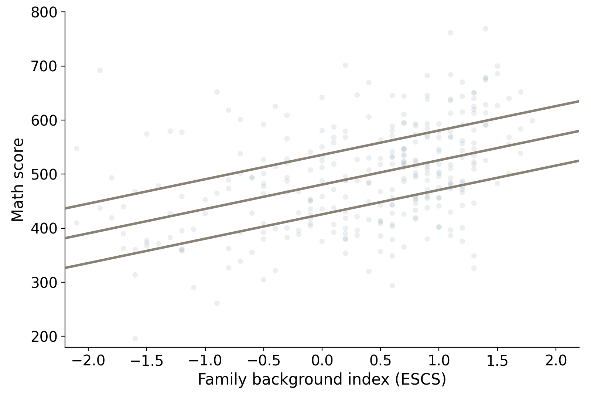
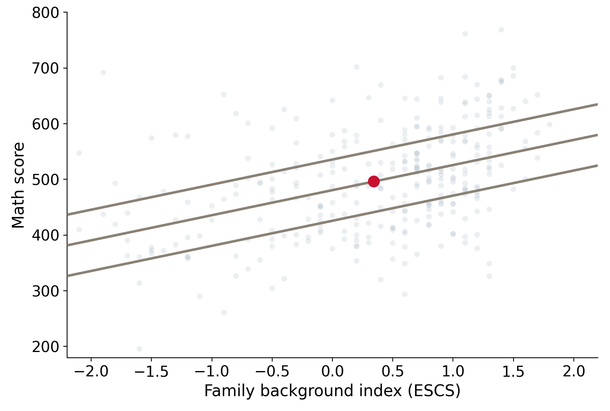
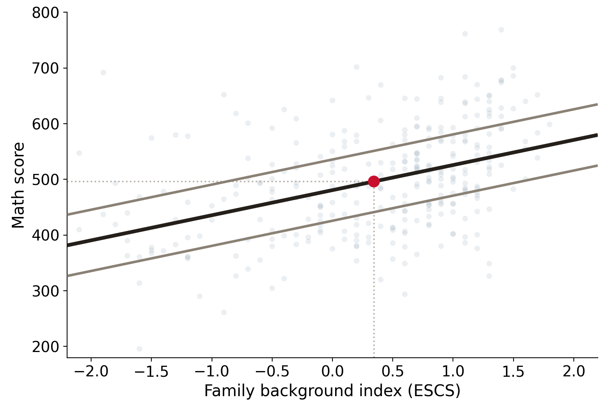
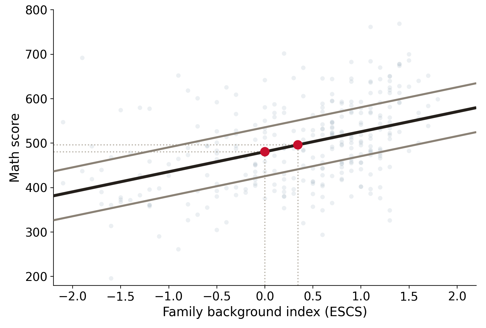
Data: PISA 2022, Australia (OECD)
Interpretation
\widehat{\text{math}} = 481 + 45 \times \text{ESCS}
Slope: students whose ESCS index is 1 point higher score 45 points higher on average
Intercept: a student at ESCS = 0 is predicted to score 481
Here 0 is meaningful:
- ESCS = 0 is an OECD-average family
- 481 describes a real kind of student
Other times it is meaningless:
- if we regress weight on height
- the intercept is the predicted weight at height 0
Read the intercept, then decide whether it's meaningful
Residual vs. error (N=25)
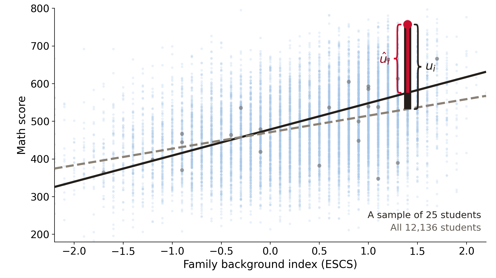
Data: PISA 2022, Australia (OECD); dashed line fitted on all 12,136 students, solid line on a sample of 25
Single regression summary
- Covariance has nonsense units, but we can rescale it to get
- the correlation coefficient
- our regression slope
- A straight line describes E[Y \mid X] when the conditional means line up
- Least squares picks the line with the smallest sum of squared residuals
- Residuals are signed gaps to the fitted line
- Errors are signed gaps to the population line
The many names of Y and X
\widehat{\text{math}} = 481 + 45 \times \text{ESCS} \qquad\qquad y_i = \beta_0 + \beta_1 x_i + u_i
Y: the thing we're trying to understand
- dependent variable
- outcome variable
- response variable
- predicted variable
- LHS variable
X: the variable(s) we use to "explain" Y
- independent variable
- explanatory variable
- regressor
- predictor
- covariate
- RHS variable
You pick the data!
Choose your own adventure: last call
This is your chance to decide which data we work with:
- Sydney Airbnb: what makes a listing expensive?
about 20,000 Sydney listings - US wages: who earns what, and why?
nearly 150,000 workers
https://emiliatjernstrom.com/econ2041/portal.html

Bondi sells beach, Macquarie Park sells... metro
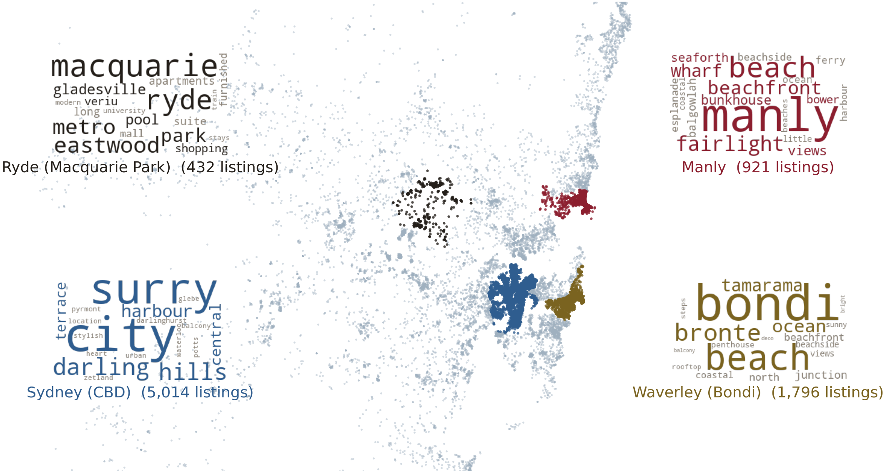
Data: Inside Airbnb, Sydney, snapshot of 16 June 2026, 20,573 listings
Different jobs & different pay
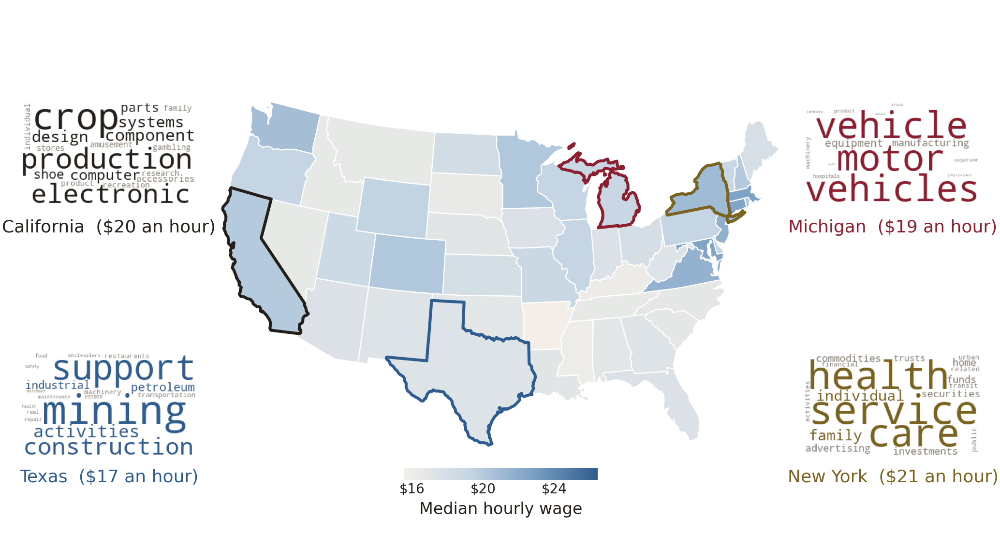
Data: US Current Population Survey, 2014 outgoing rotation groups, 131,082 full-time workers
How lucky is the Lucky Country?
Today's data: pokies and losses across Victoria
Australians are world leaders...
Australians are world leaders...
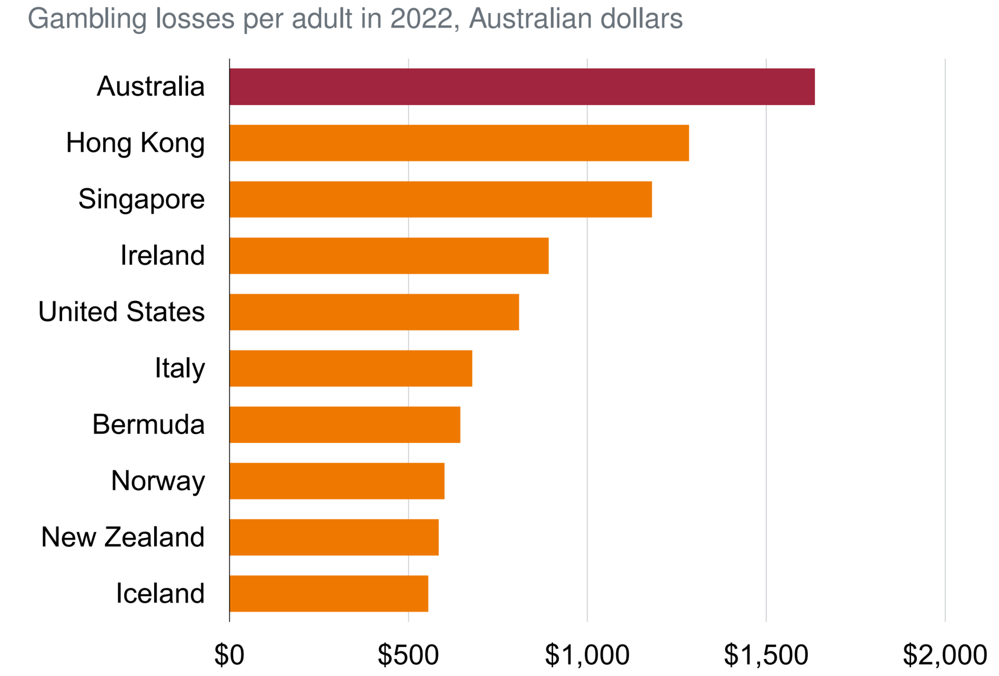
Data: Grattan Institute, "A better bet" (2024), Figure 1.1
Australians lost $24B in a year
The scale:
Collectively, Australians lost $24B gambling in 2020-21
The concentration:
76% of the world's pub-and-club pokies are in Australia
The inequality:
Some communities lose 10x more per capita than others
The politics:
$9B in state gambling taxes, 7.8% of all state tax revenue
Sources: Grattan Institute (2024); The Australia Institute (2017); Charles Livingstone, The Conversation (2025)
Pokies can be hard to escape!
Proportion of pubs / clubs in LGA that have pokies
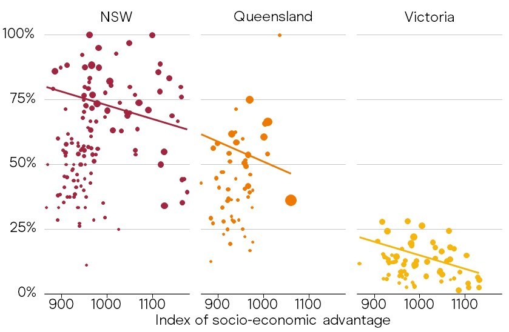
Data: Grattan Institute, "A better bet" (2024), Figure 1.4
This is highly policy-relevant & studied
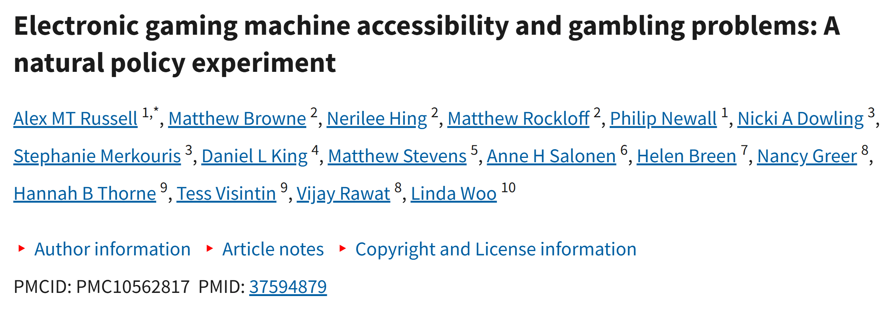
Net expenditure means losses
EGM (electronic gaming machine): pokies
LGA: Local Government Area
Net expenditure: Gambling losses
Data sources:
- Gaming expenditure: Victorian Gambling and Casino Control Commission
- Employment: Department of Employment
- Population: Department of Environment, Land, Water and Planning
Seven variables, one row per LGA
total_net_exp
adult_pop
egm_per_1000
exp_per_adult
unemployed
ue_rate
SEIFA_dis_score
Total net gaming expenditure
LGA adult population
EGMs per 1,000 adults
Expenditure per adult ($)
Unemployed persons (count)
LGA unemployment rate
SEIFA disadvantage index (higher = less disadvantaged)
total_net_exp and exp_per_adult are gambling losses
Losses per adult vary tenfold across LGAs
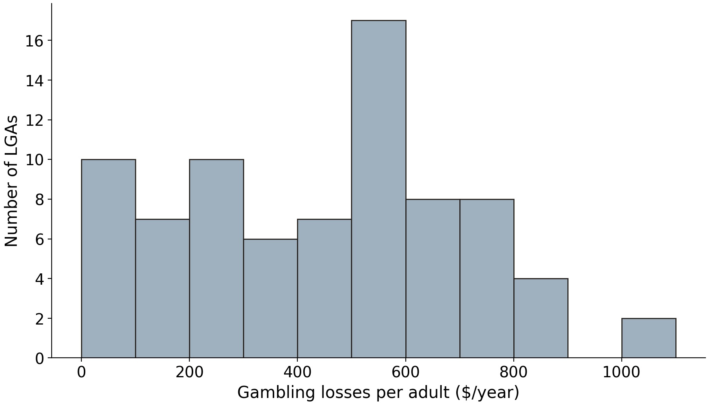
Data: VGCCC 2024, 79 Victorian LGAs
Let's check your intuition!
3 predictions, then the data answer
Answer these three questions
- How strong is the pokies-losses correlation?
- Are losses higher where unemployment is higher?
- Which of the three tracks losses most closely?
https://emiliatjernstrom.com/econ2041/portal.html
Gambling losses vs per-adult pokies
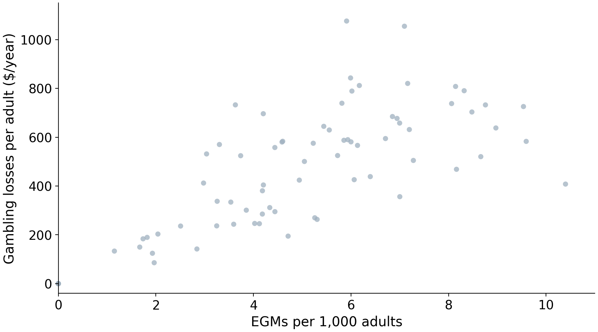
r = 0.78Data: VGCCC 2024, 79 Victorian LGAs
Pokies track losses most closely
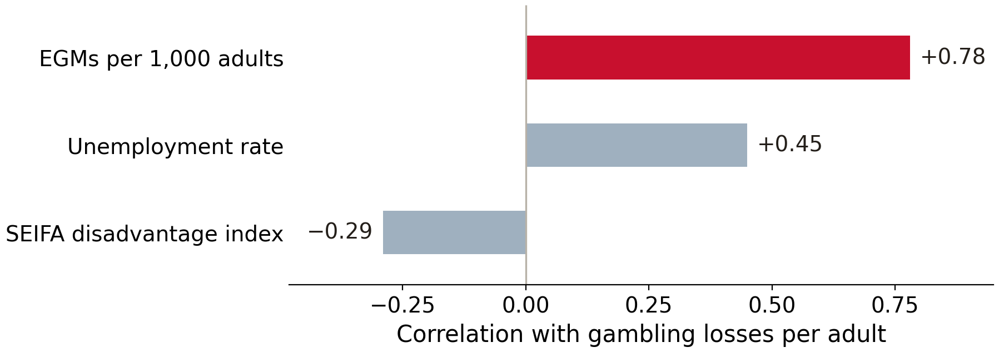
Data: VGCCC 2024, 79 Victorian LGAs
What the correlation
can't tell us
You can follow along in a notebook
https://emiliatjernstrom.com/econ2041/lectures/w06
As usual, it will open directly in Colab
Click Copy to Drive first, so you can save your edits
OLS in Python
from statsmodels.formula.api import ols
model = ols("exp_per_adult ~ egm_per_1000", data=pokies).fit() coef std err t P>|t| [0.025 0.975]
--------------------------------------------------------------------------------
Intercept 71.1722 38.992 1.825 0.072 -6.471 148.816
egm_per_1000 78.2968 7.205 10.866 0.000 63.949 92.645OLS confirms: more pokies, more losses
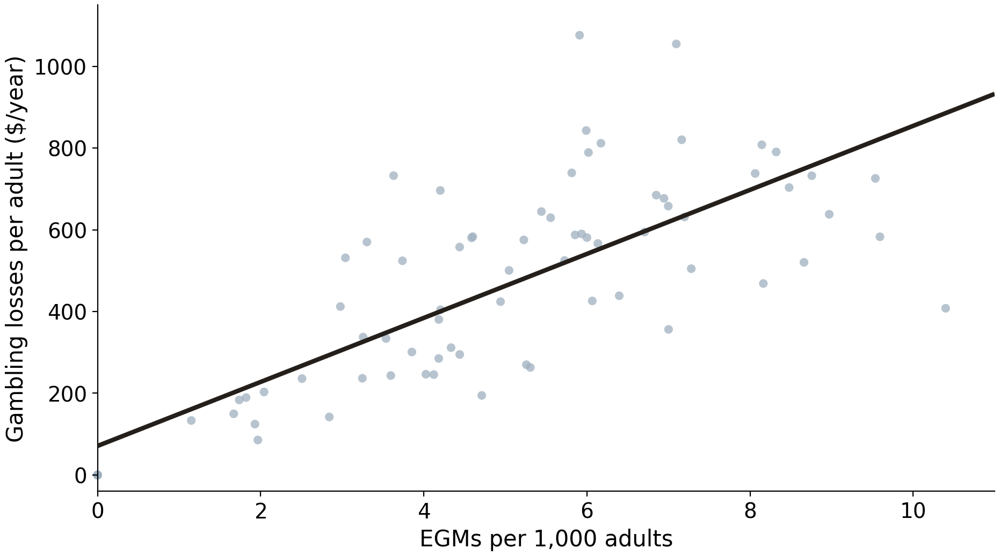
\widehat{\text{losses}} = 71 + 78 \times \text{EGMs per 1,000}
Data: VGCCC 2024, 79 Victorian LGAs
Unemployment, holding pokie density fixed
Our simple regression conditioned on one variable
- E[\,\text{losses} \mid \text{EGMs}, \text{UE} = \text{high}\,]
- E[\,\text{losses} \mid \text{EGMs}, \text{UE} = \text{low}\,]
Creating a categorical (dummy) variable
median_val = pokies["ue_rate"].median()
pokies["high_ue"] = (pokies["ue_rate"] > median_val).astype(int)high_uestores the answer to our comparison.astype(int)turnsTrue/Falseinto 1 and 0- 1 = above-median unemployment (39 LGAs)
- 0 = below-median unemployment (40 LGAs)
- A 0/1 variable is called a dummy variable
The same 79 LGAs, by UE category
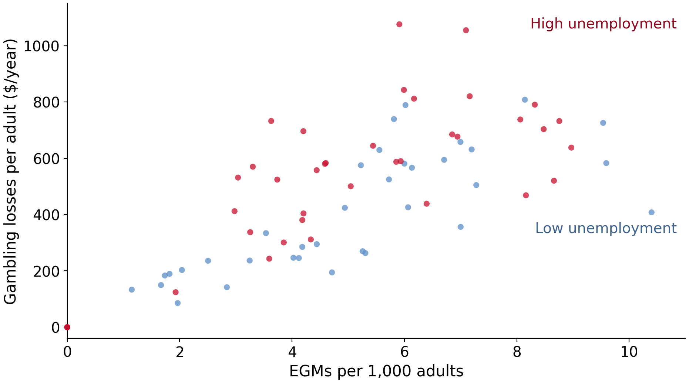
Data: VGCCC 2024, 79 Victorian LGAs
The same 79 LGAs, by UE category
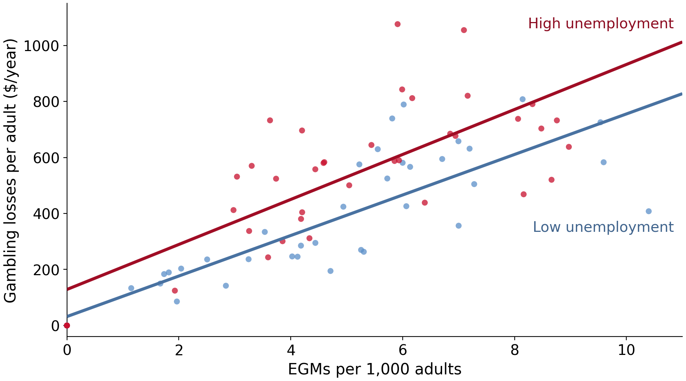
Data: VGCCC 2024, 79 Victorian LGAs
Multiple regression!
Both explanatory variables
One regression
All 79 LGAs
The dummy shifts the intercept
\text{losses}_i = \beta_0 + \beta_1 \, \text{EGMs}_i + \beta_2 \, \text{high\_ue}_i + u_i
For low-unemployment LGAs (\text{high\_ue} = 0): intercept \beta_0
For high-unemployment LGAs (\text{high\_ue} = 1): intercept \beta_0 + \beta_2
Same slope \beta_1 in both groups: two parallel lines
Add high_ue to the ols regression!
coef std err t P>|t| [0.025 0.975]
--------------------------------------------------------------------------------
Intercept 16.1362 38.739 0.417 0.678 -61.018 93.291
egm_per_1000 75.8681 6.674 11.367 0.000 62.575 89.161
high_ue 134.7112 35.300 3.816 0.000 64.406 205.016Two parallel lines, shifted
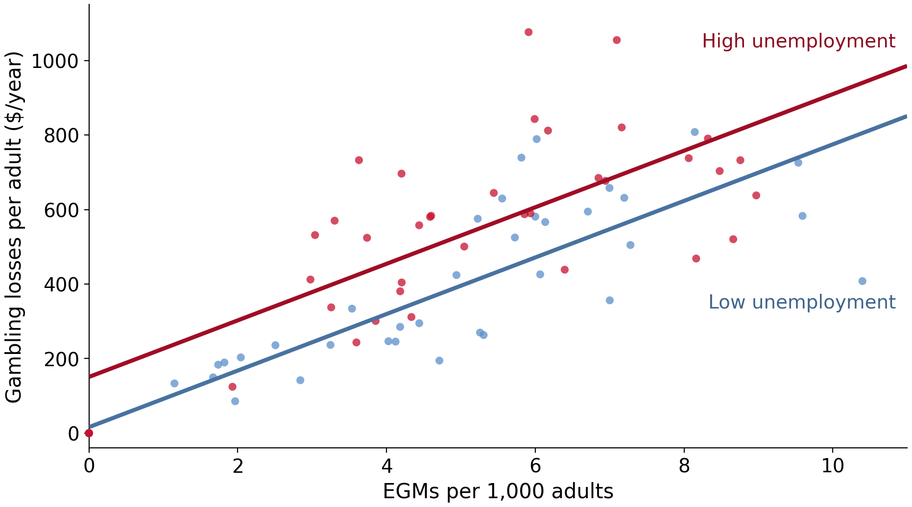
Data: VGCCC 2024, 79 Victorian LGAs
Split sample vs shared slope
Two regressions, two slopes
One regression, one shared slope
Data: VGCCC 2024, 79 Victorian LGAs
The second X can be continuous
pokies["ue_pct"] = 100 * pokies["ue_rate"]
ols("exp_per_adult ~ egm_per_1000 + ue_pct", data=pokies).fit() coef std err t P>|t| [0.025 0.975]
--------------------------------------------------------------------------------
Intercept -115.9316 49.520 -2.341 0.022 -214.559 -17.304
egm_per_1000 72.8291 6.329 11.507 0.000 60.224 85.434
ue_pct 61.1848 11.845 5.165 0.000 37.593 84.776What multivariate regression buys us
Uses all the data for every coefficient \rightarrow more precise estimates
Holds the other X fixed: but only the variables we put in the formula
Scales: if we have 3, 4, or 10 X-variables, splitting would not work!
Some take-aways
A categorical variable enters regression as a 0/1 "dummy variable"
The dummy shifts our regression line
Multivariate regression holds the other explanatory variables fixed & uses all the data
Losses track where pokies are allowed
Data: The Conversation, citing Queensland Government Statistician's Office